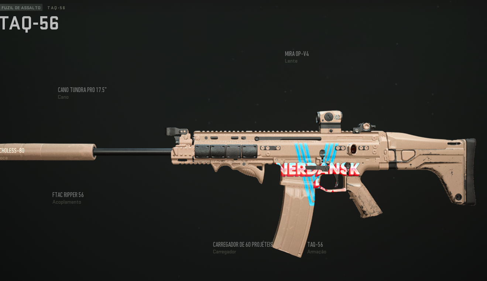

Call of Duty: Confira Melhores Armas Do Warzone 2.0
Ter o equipamento certo pode ser a diferença entre vitória e derrota Confira Logo abaixo As Armas que Pode Fazer Total Diferença Para Você e Sua Equipe
Call of Duty: Warzone 2.0 é a nova experiência Battle Royale da franquia CoD. Lançado no dia 16 de novembro para as principais plataformas do mercado, o game é gratuito e oferece a experiência cheia de ação da série para a fórmula de mundo aberto com até 150 jogadores tentando sobreviver e se sagrar o campeão da rodada.

Confira as melhores armas de Call of Duty: Warzone 2.0 — Foto: Divulgação/Activision Blizzard
Assim como é possível encontrar armas pelo mapa de Al Mazrah, jogadores também podem preparar carregamentos para levar para o campo de batalha. Com uma variedade de armas diferentes, fica difícil saber qual a melhor opção. Para ajudar com isso, o ge preparou uma lista abaixo com as melhores armas em cada uma das categorias disponíveis, confira. Vale lembrar que esta lista é de acordo com a Temporada 1 do título, que está ativa no momento.
Rifle de Assalto - TAQ-56
Considerado o melhor rifle de assalto de Call of Duty: Warzone 2.0, o TAQ-56, também conhecido como SCAR, é um armamento velho conhecido dos fãs de CoD. Tendo um bom alcance com seus disparos, e um baixo recuo ao atirar, esta arma é perfeita para aqueles que curtem rifles de assalto e gostam de possuir uma opção versátil em seu arsenal. Para desbloquear a arma, será necessário chegar ao nível 19.
SMG - Fennec 45

Enquanto uma grande parte do armamento de Warzone 2.0 favorece o combate a longa distância, algumas armas focadas para confrontos de curta distância ainda existem. Uma das melhores é a Fennec 45, uma sub metralhadora que possui uma taxa de tiro alta, perfeita para duelos em corredores apertados. A Fennec 45 é desbloqueada ao chegar ao nível 38.
Rifle de Batalha - FTAC Recon
Oferecendo armas mais pesadas e com tiros mais potentes que a categoria de Rifle de Assalto, o Rifle de Batalha é perfeito para quem quer poder suficiente para eliminar inimigos com poucos tiros. A melhor opção neste quesito é o FTAC Recon, que fornece uma arma que pode eliminar oponentes com dois tiros, mas tem como desvantagem um clipe de munição extremamente baixo, possuindo apenas 10 projeteis. Para desbloquear o FTAC Recon, é necessário subir o nível do rifle de assalto M4 para 13.
Espingarda - Expedite 12
Apesar de espingardas não serem tão poderosas como eram em jogos passados, para aqueles que ainda gostam de utilizar este tipo de armamento, Warzone 2.0 oferece uma boa opção. Expedite 12 possui um bom poder fogo, além de possuir o melhor alcance e taxa de tiro de todas as espingardas disponíveis até o momento no título.
LMG - RPK
A melhor arma de Call of Duty: Warzone 2.0 é a RPK, uma LMG que possui um alto dano, baixo recuo e um clipe de munição grande. Apesar de ser um pouco mais lento que um rifle de assalto, as vantagens já mencionadas da RPK faz com que o armamento se destaque entre todas as opções e domine os combates de Warzone 2.0. Para desbloquear a arma, é necessário aumentar o nível da Kastov 762 até 16.
Fuzil de Atirador - SP-R 208
O SP-R 208 é o melhor fuzil de atirador disponível na temporada 1 de Call of Duty: Warzone 2.0. Possuindo a melhor precisão de categoria, a mobilidade disponível ao equipar o fuzil ajuda bastante jogadores a se proteger de ameaças e escapar emboscadas. A arma é melhor recomendada para duelos de média distância. Para desbloquear o SP-R 208, basta atingir o nível 7.
Fuzil de Precisão - Signal 50

Um dos tipos de armas mais utilizados em modos online, o fuzil de precisão marca presença em Call of Duty: Warzone 2.0. O Signal 50 é a melhor opção para quem quer pegar oponentes a longa distância, fornecendo uma taxa de tiro alta e ótima precisão para tiros. Para conseguir colocar as mãos na arma, é necessário atingir o nível 44.